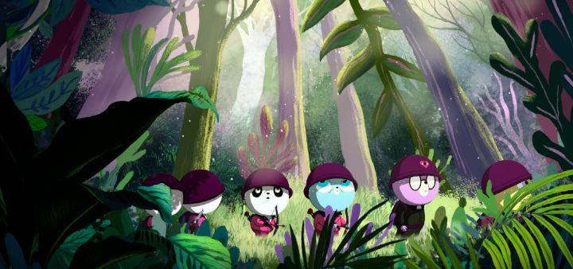

I was morbidly curious to see "Unicorn Wars" ever since its announcement. Director Alberto Vazquez is a unique visionary, but his animation is unusually dark and cruel, featuring complex themes like addiction, trauma, poverty, and physical and emotional abuse with cute and cuddly animal characters. It might look like something for kids, but no one under 18 should watch his work. I appreciate the uniqueness, but I'm not sure I liked the style in his previous movie "Birdboy - The Forgotten Children" (or "Psciconautas"). And if "Unicorn Wars" was to feature the real horrors of war, it would probably be even more difficult to watch. Set in a fictional fantasy world, we're introduced to an army battalion of teddy bears, training to fight in a long-going war against the unicorns. The story goes (from their perspective) that the Teddy Bears once lived in the abundent forest, but were one day kicked out by the Unicorns, and have been fighting to return to their rightful home ever since (there's heavy allegory to Adam and Eve being kicked out of Paradise here). The Bears are smart, and have religion, weapons and technology. They're also arrogant and vain. As a source of the movie's humour, the Bear soliders are obsessed with their appearance and their cuteness, and there's a very strong homosexual tone with their interactions between each other (there's even full male Bear nudity!). Less funny is how one of the fatter Bears is ridiculed and bullied by everyone, especially his cruel brother, whom we're led to believe is the protagonist for being the cutest, best, and certainly most determined. Later, he'll become the undeniable central villain. The war gets more serious when the new recruits are sent into the forest to find a separate band of bears, and they discover the horrors of the forest. Other wild animals, plants and foods there are dangerous or poisonous, or even drug-trip inducing. When they finally find the carnage of the other team, they're shocked or horrified at the entrails. The Unicorns, armed with their sharp horns, are vicious and effective killers. Most of the new recruits won't survive. But from the Unicorn's perspective, they're just living peacefully in a forest of abundance and kind animals. If not for the Teddy Bears, they're life would be perfect. But instead, they have to be prepared for the Bears' invasion, while also worrying about a dark force that the monkes of the forest are feeding into existance. There's a lot of inspiration to Studio Ghibli's "Princess Mononoke" in the happenings here. The one Bear that was bullied comes to discover this, and tries to stop his fellow Bears from going too far before it's too late. In a Vazquez film, you can imagine it doesn't end well. It's a difficult movie to watch, but arguably more accessible than the director's previous works. As a tragedy, it's artful. The ending is also clever and haunting. But a lot of it is also shock value, just to watch Teddy Bears be horrifically cruel. If you have any stuffed bears in your house, you'll probably look at them very differently.The production quality is reasonably strong and consistent, if not spectacular, regarding visuals and audio. If you've never seen anything by creator Alberto Vazquez, I'd strongly encourage looking up his short films first to know what you're getting into. But otherwise, this is a good feature-film to represent what he's all about, and leaves the viewer a lot to talk about with baffled friends who are only used to "Care Bears" or "Winnie the Pooh."
- "Ani" More reviews can be found at : https://2danicritic.github.io/ Previous review: review_Unicorn_Boy Next review: review_Urusei_Yatsura_-_Beautiful_Dreamer